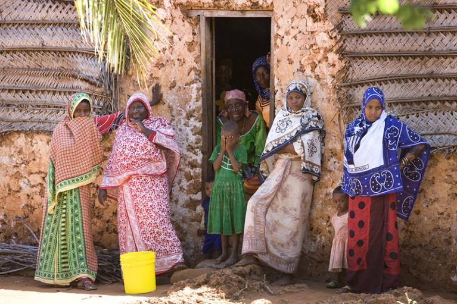
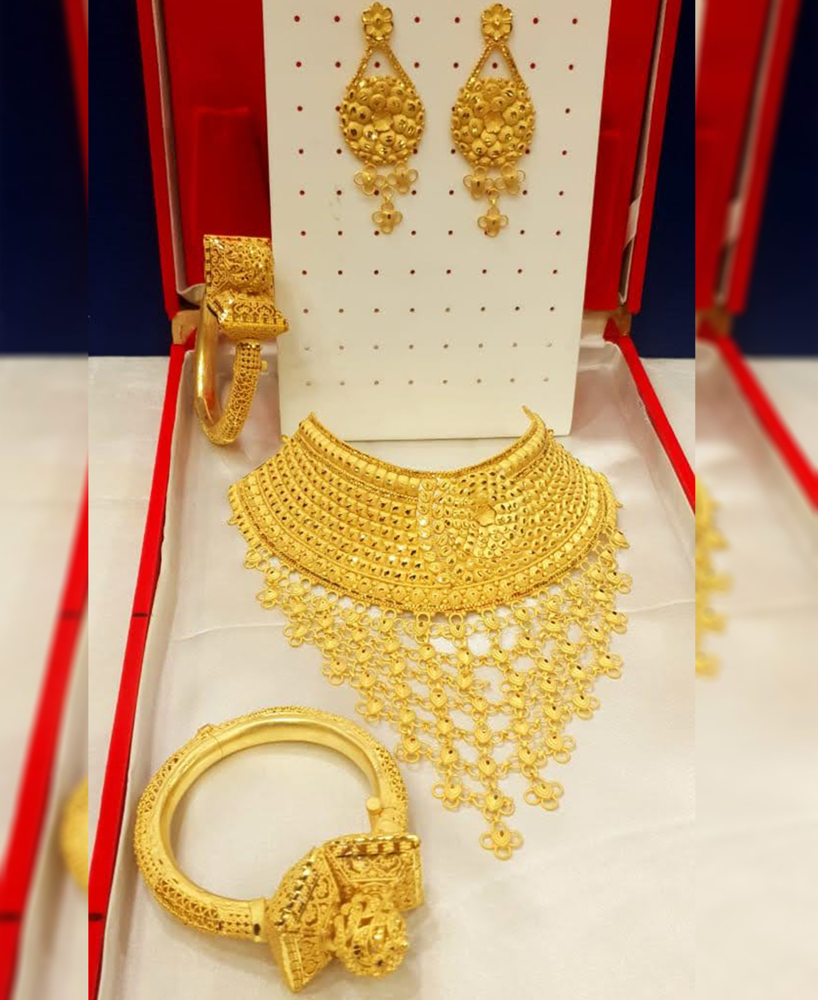
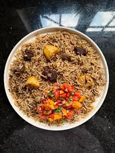
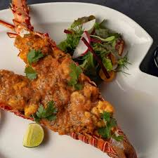
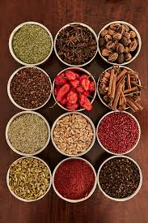
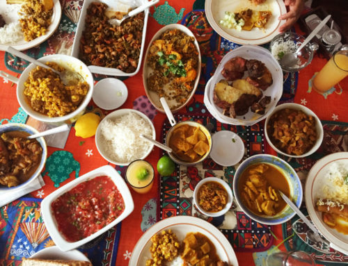
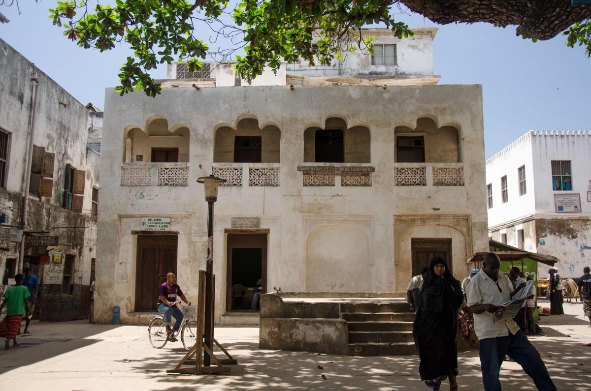
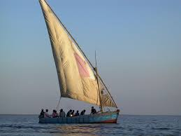
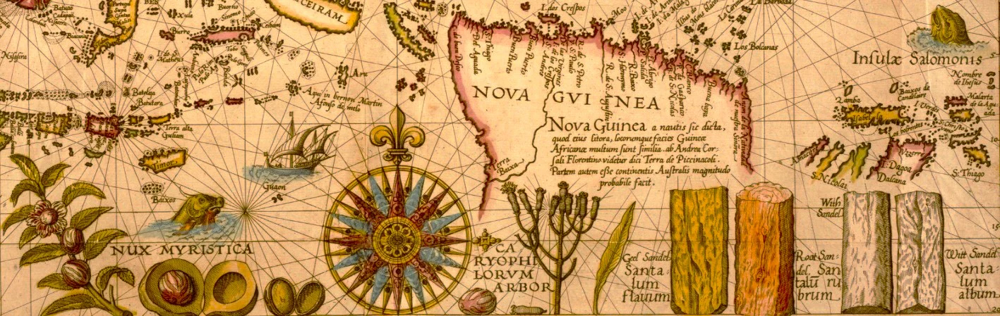
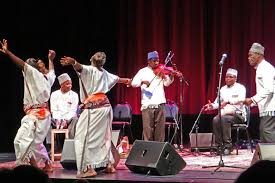

From Arabia to the Swahili Coast
The Arab and Semitic presence on the East African coast began as early as the 1st century CE, driven by Indian Ocean monsoon trade routes that connected Arabia, Persia, India, and East Africa in a vast maritime commercial network. Arab and Persian traders and settlers arrived in waves, establishing trading posts that grew into prosperous city-states along the Swahili Coast.
Over centuries, Arab settlers intermarried with local Bantu-speaking coastal communities, creating a unique hybrid civilization — the Swahili (from the Arabic word Sawahil, meaning "coastal peoples"). This fusion produced a distinctive culture, language, architecture, and worldview that blended African and Arab elements seamlessly. Key Kenyan city-states including Mombasa, Malindi, Pate, and Lamu became major centers of this civilization.
The Swahili: Crossroads of Civilisations
Islam, Poetry & Coral Architecture
Swahili culture is one of the most sophisticated in sub-Saharan Africa. Islam arrived with Arab traders from the 7th century onward and became the defining spiritual and social framework of the coast. Mosques, madrassa (Islamic schools), and the call to prayer became inseparable parts of coastal life.
Swahili literature is celebrated for its rich poetic traditions — utendi (epic poetry), shairi (lyric verse), and tenzi (extended narrative poems) in classical Swahili. The taarab musical tradition — blending Arabic maqam scales with African percussion and Indian instruments — is the quintessential Swahili art form, still beloved at weddings and festivals in Mombasa and Lamu today.
Traditional Clothing
Swahili dress reflects its Arab and Persian influences — flowing fabrics, intricate embroidery, and the symbolic significance of the kanga and kofia in daily and ceremonial life.

The Kanga
The kanga is the iconic Swahili women's garment — a brightly printed cotton cloth worn in pairs and inscribed with a proverb or message. It serves as dress, head covering, baby carrier, and communication device simultaneously, making it one of Africa's most culturally loaded garments.
Kanzu & Kofia
Swahili men wear the kanzu — a long white or cream robe of Arab origin — paired with the kofia (embroidered cap). The intricacy of the kofia's embroidery traditionally indicated the wearer's social status and religious learning.

Gold & Silver Ornaments
Swahili women historically adorned themselves with elaborate gold and silver jewelry — necklaces (ukuwa), bangles, and anklets — reflecting their community's access to Indian Ocean trade networks and their Arab aesthetic heritage.
Traditional Foods
Swahili cuisine is a celebration of the Indian Ocean trade — a rich fusion of Arabic, Indian, Persian, and African flavors. Biryani (fragrant spiced rice with meat) and pilau (spiced rice cooked in broth with cardamom, cinnamon, cumin, and cloves) are the cornerstone dishes, prepared for weddings, Eid celebrations, and important gatherings.
Mkate wa ufuta (sesame seed flatbread) and mandazi (fried doughnuts) are daily staples of coastal mornings. Samaki wa kupaka (fish in coconut curry sauce) reflects the coast's abundance of seafood and coconuts. The use of cardamom, coconut milk, tamarind, and saffron marks Swahili cooking as among the most aromatic on the African continent. Chai ya tangawizi (spiced ginger tea) is the ubiquitous social drink.




Trade & Commerce
For over a thousand years, the Swahili coast was one of the most commercially dynamic zones in the world. Arab-Swahili merchants controlled the Indian Ocean trade routes, exchanging African ivory, gold, iron, and enslaved people for Indian textiles, Chinese porcelain, and Persian ceramics.
Today, Mombasa remains Kenya's primary port city. Swahili communities continue to dominate coastal trade, the fishing industry, and tourism sectors.
Maritime Trade
Arab dhows sailed the monsoon winds between Arabia, India, and East Africa for centuries. Mombasa and Malindi were key nodes in this global commercial network spanning from China to the Mediterranean.
City-States
Lamu, Malindi, Mombasa, and Pate were prosperous Swahili city-states that generated wealth through customs duties, trade brokerage, and the production of luxury goods for export.
Islamic Scholarship
Swahili coastal cities hosted renowned Islamic scholars and madrassas, making them centres of Arabic literacy, Islamic jurisprudence, astronomy, and medicine from the 10th century onward.
Modern Tourism
Today the Swahili coast's beaches, architecture (Fort Jesus, Lamu Old Town — a UNESCO World Heritage Site), and cuisine attract millions of tourists annually, sustaining a substantial portion of Kenya's tourism economy.
Sultans, Sheikhs & City-State Governance
Traditional Swahili governance was monarchical in form — city-states were ruled by Sultans or Walis (governors) whose authority was grounded in both political power and Islamic legitimacy. The most powerful Swahili polity was the Sultanate of Oman and Zanzibar, which controlled much of the East African coast from the 17th century until the colonial period.
Below the Sultan, Sheikhs (Islamic scholars and community elders) wielded enormous social and judicial authority through the Islamic legal system (sharia). Religious leaders guided daily life, resolved disputes, and negotiated with foreign traders. The Liwali administered local districts, collecting taxes and maintaining order in the Sultan's name.
Sultanic Authority
Sultans ruled by combining Arab dynastic legitimacy with Islamic religious authority, commanding loyalty from both Arab settlers and local Swahili communities.
Islamic Courts (Kadhi)
Islamic courts administered by the Kadhi (Islamic judge) governed family law, inheritance, marriage, and commercial disputes according to Shafi'i Islamic jurisprudence.
Merchant Council Influence
Wealthy Arab and Swahili merchant families wielded informal but substantial political power through commercial networks, maritime alliances, and strategic marriages.
Continued Legacy
Kenya's constitution still recognises Kadhi courts for personal law among Muslim communities — a living inheritance of the Swahili-Arab governance tradition.
Life on the Swahili Coast

Mombasa Old Town

